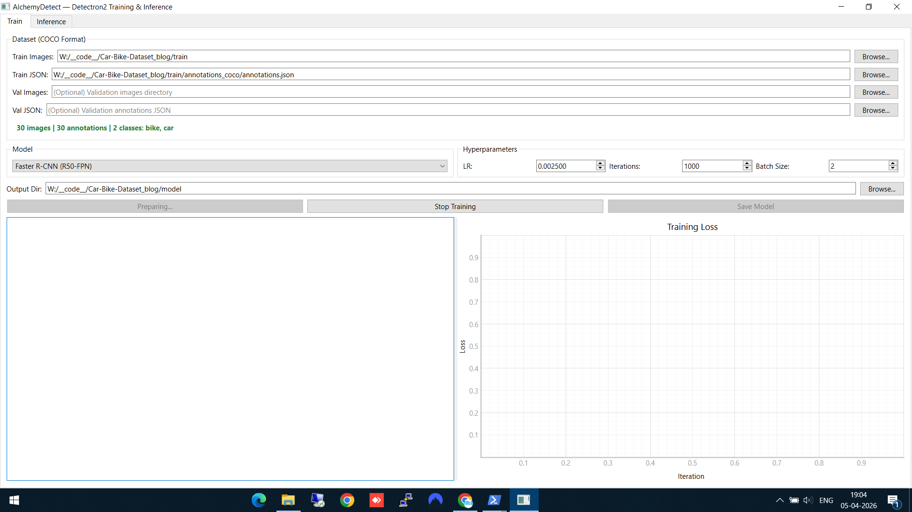
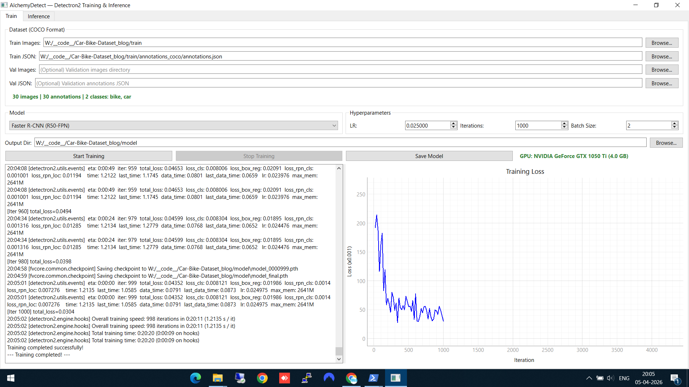
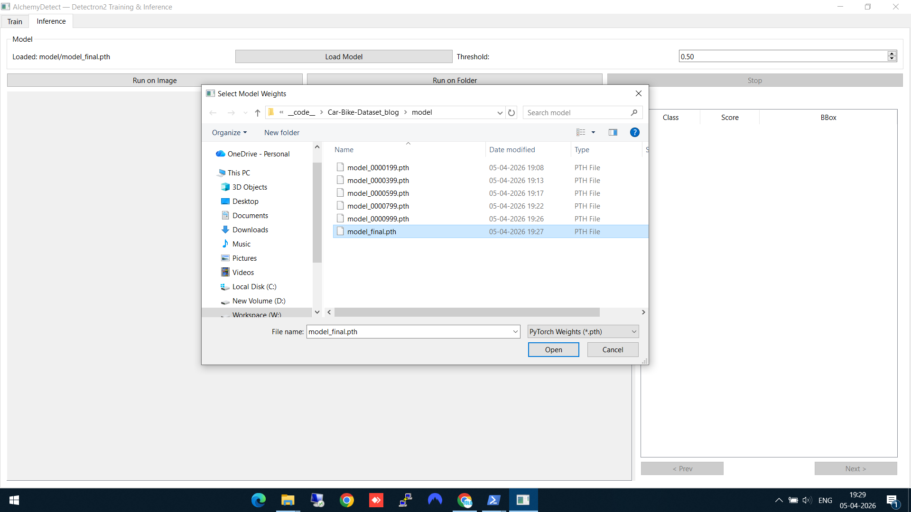
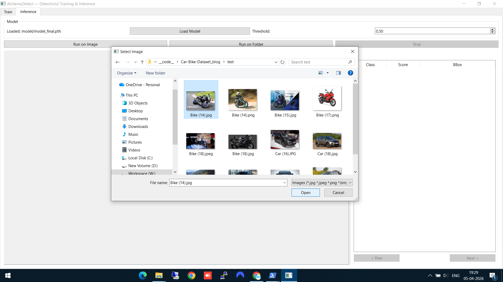
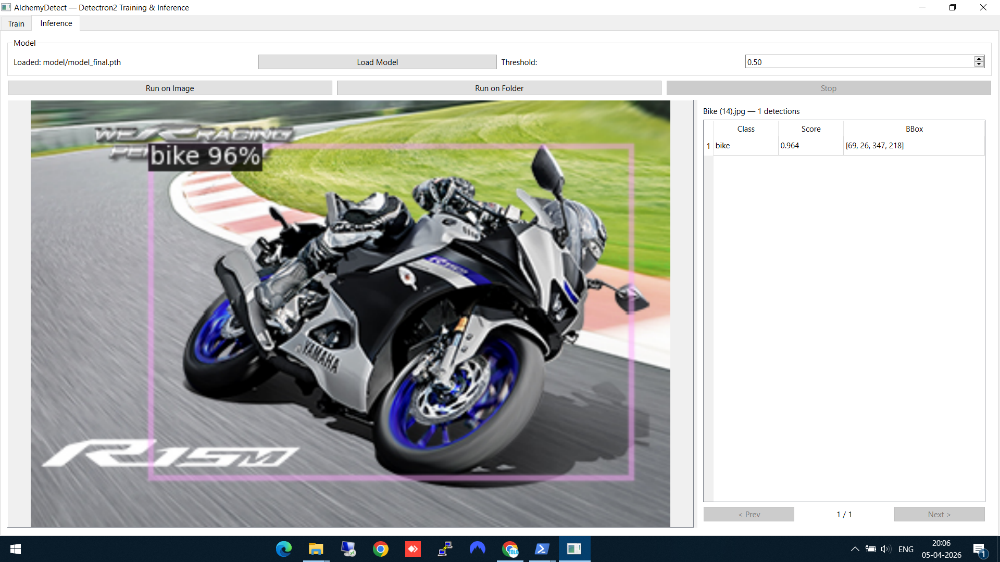
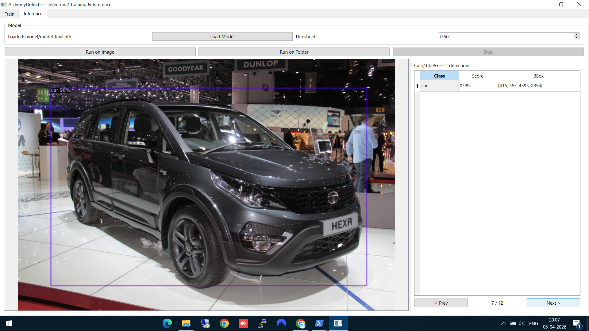
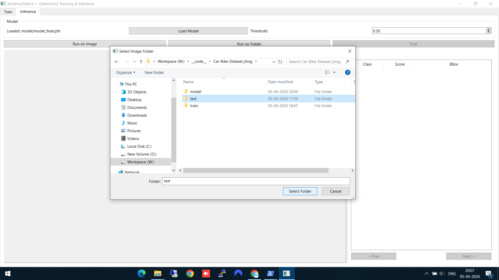
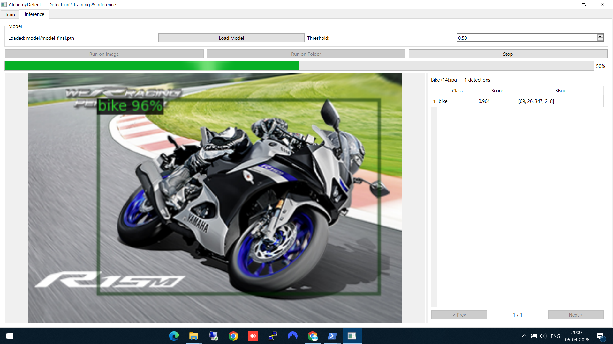

The Motivation
Detectron2 is one of the best frameworks for object detection and instance segmentation. But getting started with it means writing configuration files, training scripts, and inference pipelines. For quick experiments or for colleagues who aren't comfortable with code, this is a barrier.
I built AlchemyDetect to remove that barrier: select a model, point it at your data, click train, watch the loss curve, run inference — all from a GUI.
Installation
pip install alchemydetectRequires Python 3.10 or 3.11. Dependencies include PyTorch, Detectron2, PyQt6, and pyqtgraph — all installed automatically.
Note: You need a CUDA-capable GPU for practical training speeds. CPU training works but is very slow for anything beyond toy datasets.
Supported Models
AlchemyDetect supports six model configurations across three architectures, all initialized with pretrained COCO weights for strong transfer learning:
- Faster R-CNN — R50-FPN and R101-FPN. The workhorse of two-stage detection.
- RetinaNet — R50-FPN and R101-FPN. Single-stage detector, faster training and inference.
- Mask R-CNN — R50-FPN and R101-FPN. Extends Faster R-CNN with per-instance pixel masks for instance segmentation.
Walkthrough: Training a Car/Bike Detector
Continuing from the AlchemyAnnotate walkthrough, I have a COCO JSON dataset of 30 labeled car and bike images. Let's train a Faster R-CNN model on it and run inference — all without writing a single line of code.
Step 1: Configure training data and model
In the Train tab, set up your training run:
- Train Images — point to the folder containing your training images
- Train JSON — select the COCO annotation file (the one we exported from AlchemyAnnotate)
- Output Dir — choose where to save the trained model weights
- Model — I selected Faster R-CNN (R50-FPN)
As soon as you select the annotation file, AlchemyDetect reads it and displays the number of images, total annotations, class count, and class names (bike, car) — a quick sanity check before training.

Train tab — dataset loaded (30 images, 2 classes: bike, car), Faster R-CNN selected, hyperparameters set
Step 2: Train and watch the loss curve
Set your hyperparameters (learning rate, iterations, batch size) and click Start Training. Two things happen simultaneously:
- The left panel shows a live training log — each iteration prints the loss values, learning rate, and timing
- The right panel shows a real-time Training Loss graph that updates as training progresses
You can see the loss dropping from ~2.5 down to ~0.05 over the course of training. When complete, the model weights are automatically saved to your output directory.

Training complete — loss dropped from ~2.5 to ~0.05, model saved. The GPU info shows training ran on an NVIDIA GeForce GTX 1050 Ti.
Step 3: Load the trained model
Switch to the Inference tab. Click Load Model and select the final model weights (model_final.pth) from the output directory. The model checkpoint files from different training iterations are also available if you want to compare.

Loading model_final.pth — the trained Faster R-CNN weights
Step 4: Run inference on a single image
Click Run on Image and select a test image (one the model hasn't seen during training). AlchemyDetect shows a file browser with image thumbnails for easy selection.

Selecting a test image — thumbnails make it easy to pick the right one
Step 5: See the detection results
The model detects the bike with 96% confidence. The result panel on the right shows the class name, confidence score, and bounding box coordinates. The detection is drawn directly on the image.

Bike detected at 96% confidence — bounding box overlaid on the image
Here's another result — a car detected at an auto expo, with the model correctly identifying it despite the complex background:

Car detection on a challenging test image with busy background
Step 6: Batch inference on a folder
For running inference on multiple images at once, click Run on Folder and select your test folder. AlchemyDetect processes every image in the folder.

Selecting the test folder for batch inference
A green progress bar shows the batch inference running. You can browse through the results using the Prev/Next buttons as each image completes.

Batch inference in progress — green bar shows 50% complete, results viewable as they come in
Technical Stack
- PyQt6 — Desktop GUI framework
- Detectron2 — Model training and inference engine
- PyTorch — Deep learning backbone
- pyqtgraph — Real-time loss plot rendering
MIT-licensed. Source on GitHub.
The Alchemy Suite Pipeline
AlchemyDetect is the middle piece of the pipeline:
- AlchemyAnnotate — Label images, export as COCO JSON
- AlchemyDetect — Train a detection model on those labels
- AlchemyCV — Pre/post-process images in the pipeline
Each tool is independent, but together they give you a complete local workflow from raw images to a trained, deployable model — no cloud services, no subscriptions, no data leaving your machine.